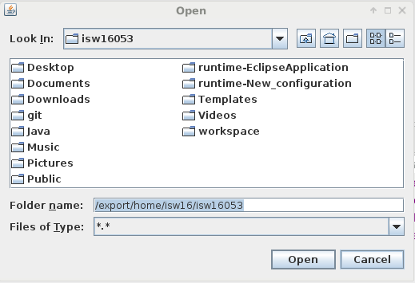

Run FMC
First: choose a Project in the Package Explorer View of Eclipse with a right mouse click
Second: go to the "Feature Metrics Calculate" option
Third: choose "Run" to calculate the metrics for the SRC and TEST Folder of the Project
or choose "Select other folder" to calculate the Metrics for a selected folder

After the FMC View opens the table shows as well SRC Feature as TEST Feature.
After that the User can choose to view only SRC Feature or TEST Feature
As User it is possible to select another folder to calculate the metrics except SRC and TEST folder
